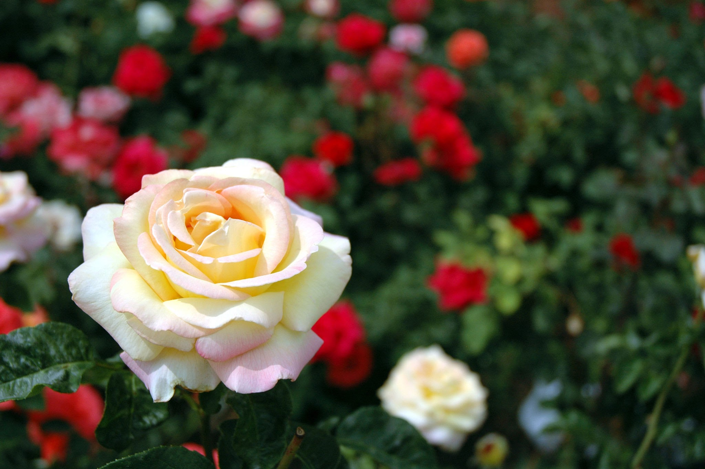
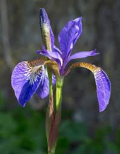

Rose
Roses are one of the most popular and beloved flowering plants in the world, known for their beauty, fragrance, and versatility.
Types of Roses:
- China Rose
- Damask Rose
- Climbing Rose
- Floribunda Rose
- Hybrid Tea Rose
 Sunflower
Sunflower
Sunflowers are iconic, bright yellow blooms known for their large, round faces and sturdy stalks. The very embodiment of summer. With their bright, yellow petals and tall green stems, sunflowers are used as a symbol of happiness.
Types of Sunflowers:
- Common Sunflower
- Maximilian Sunflower
- Jerusalem Artichoke
- Silverleaf Sunflower
- Swamp Sunflower

Iris
Irises stand out with their unique shape and beautiful colours, which often include eye-catching patterns. The iris, native to Europe and Asia, has a fan-like shape with six lobes. Its stems are very long which are either solid or hollow.
Types of Irises:
- Bearded Iris
- Siberian Iris
- Dutch Iris
- Japanese Iris
- Louisiana Iris